This lesson introduces you to some useful tools for working with open code. You will learn the various tools available to develop, store, and share open code, from version control to code editing software to containers.
After completing this lesson, you should be able to:
In Lesson 3, we learned about useful tools for working with scientific data. Now, we will provide an overview of commonly used tools that help us write and run computer code to explore, analyze, and visualize our scientific data. Later in Module 4 – Open Code, we will discuss in greater detail what it means to make our code open, and walk through the steps of how to find, create, and share open code.
Understanding how to work with scientific code is essential in the modern landscape of data-driven research. The tools presented in this lesson encompass a diverse array of resources designed to streamline, enhance, and optimize the process of developing, maintaining, and collaborating on code development for scientific research. They enable the creation of robust and efficient code, often leveraging the collective wisdom of the open-source community. In the pursuit of reproducibility and transparency, these tools can also facilitate the sharing and dissemination of scientific code, fostering collaboration and ensuring that the foundations of scientific research remain open and accessible to all.
Is the idea of writing code openly a new concept? No!
Version control is the practice of tracking and managing changes made to code or other types of files. You may be familiar with “Track changes” in software like Microsoft Word. This is a form of version control, though not one well-suited to working with code. Version control is considered standard practice in the software development community, and simplifies management of code through time.
The general way we use version control starts by initializing a folder on your computing platform with the version control system you are using. A version control system automatically tracks all changes made by contributors and allows you to work offline and return later with updates. You write code as you usually do in your code editor of choice. After you have written some code or made some updates to existing code, you then commit those changes to the version control system to create a sort of "checkpoint" that you can then revert back to later if necessary. Then you add or update more code, and commit changes again. Each commit requires you to add a short message which lets you briefly describe what changes were made. These messages serve as metadata that ensures collaborators, future users, and future you understand your development process at a point in time.
This may sound like a simple process, and in many ways it is! So why is it so important? Especially when it comes to coding, the ability to create a snapshot in time of a piece of code can be very helpful. For instance, you may have a piece of code that yields the intended result, but then you want to add a new function. You may choose to copy that code file so you don’t lose the current state, and then work in a new file. This can become cumbersome pretty quickly when you have multiple files that are different versions of the same piece of code. Or instead of creating a new file, you may write code for the new function directly in the original file, but now the code throws errors when you try to run it, and you can’t remember which lines you added since the last time the code ran without errors. By using version control, these problems are solved because we can revert back to the checkpoint when the code ran cleanly, and thereby avoid the need to create multiple copies to save the original piece of code.
There are many other features of version control systems, such as the concept of creating "branches" that allow you to work on new updates to a piece of code independently from and in parallel to the original piece of code. A branch is a deviation from the original code, but can be merged back into the original code when desired. All of these concepts are even more useful when collaborating with others using version control platforms, a collaborative practice that will be discussed later in this lesson.
There are two main styles of software version control systems:
| CENTRALIZED ☑ | DISTRIBUTED (MORE POPULAR) |
|---|---|
|
|
| CENTRALIZED | DISTRIBUTED (MORE POPULAR) ☑ |
|---|---|
|
Control: Each developer’s system can retain a copy of the codebase
|
|
Using a distributed version control system like Git gives you more flexibility.
Example: Git
The most popular version control system for software development is Git. Git is open-source and is commonly used in conjunction with web-based software hosting sites like GitHub and GitLab (more on these in the next section), which allow for collaboration and sharing of code. You can also use it on your local computer when writing your own code. Git is often run at the command line, but there are other interfaces for using Git as well, including GitHub Desktop and some code editors that have Git integration included (more on this later).
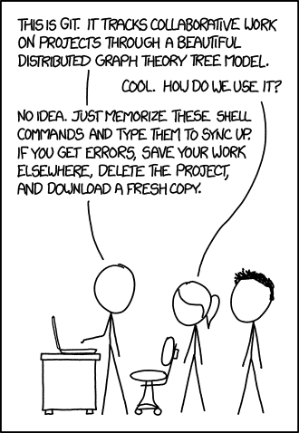
Git is very powerful and widely used (according to a Stack Overflow developer survey, over 87% of developers use Git), but that doesn’t mean it is straightforward to learn. There are many good resources for learning Git (see below). If you find Git confusing at first, know that you are not alone! (There’s even an XKCD comic about it!). For in-depth training on Git, please see the Software Carpentry lesson, listed below: Version Control with Git: Summary and Setup (swcarpentry.github.io)
Version control platforms, typically web-based software hosting platforms, expand the usefulness of version control by allowing for a centralized location to store and collaborate on code, along with many other helpful features for code development and sharing.
Some examples of version control platforms:
GitHub is one of the most popular platforms, and so we will provide examples of how to use GitHub in the rest of this section. It is important to note that GitHub is where most open-source software packages are housed, and so if you are interested in getting more involved with the open source software community, GitHub is an essential tool to learn how to use!
Example: GitHub
GitHub is an online, cloud-based software repository hosting site that integrates with Git and offers many other features that help with code development, collaboration, testing, and releases. Before we dive into some of these features, it’s important to understand how GitHub acts as a remote repository when using version control systems like Git.
If we go back to the general idea of using version control systems, GitHub can be added into the picture as a remote repository that hosts code. After creating a “checkpoint” in Git, you can then upload a copy of the current snapshot of your code to GitHub. There are a few reasons you might want to do this, including:
Let’s expand on some of GitHub’s collaboration tools. Some of these features include:
| Term | Description/Definition |
|---|---|
| Issue Tracking | Keep track of feature requests, bugs, and other types of updates via GitHub Issues. GitHub also allows the use of labels and assigning people to tasks to help organize tasks. |
| Project Discussion Forums | GitHub allows for an online discussion forum where you can ask and answer questions, and hold community discussions. |
| Contribution Tracking | GitHub has a straightforward way to keep track of suggested code contributions (called “Pull Requests”) from different people. |
| Code Review Tools | GitHub has a rich set of tools for reviewing and accepting (or denying) contributions from others (or yourself), such as in-line comments and easily viewable tracked changes to individual files. |
| Tailored Permissions | Choose who has the ability to update the code. This helps you feel confident that only those with permission can update code that you shared in GitHub, and also others feel safe to suggest updates without worrying that they might accidentally overwrite existing code. |
All of these features excel at enabling asynchronous collaboration across teams. Most scientific open- source packages use GitHub for their primary code development. Note that there are many more GitHub features that we don’t go into here that support collaboration, as well as automated workflows and so much more. To learn more about GitHub, take a look at these references:
[Cite Project Pythia: https://foundations.projectpythia.org/preamble/how-to-cite.html]
An Integrated Development Environment (IDE) plays an important role in open code development by offering a comprehensive toolkit to researchers, scientists, and developers for editing code. It is a software application that streamlines the entire process of creating, testing, and managing code for scientific research and data analysis. By providing an all-in-one platform, an IDE allows researchers to write, debug, and optimize code more efficiently, fostering collaboration and reproducibility in open code science projects.
In open science, where transparency and accessibility are paramount, IDEs often incorporate version control systems like Git to facilitate collaboration and ensure that a research codebase is readily available for others to use and improve. Additionally, many IDEs integrate with data analysis and visualization tools. This makes it easier for scientists to analyze and interpret their data, ultimately contributing to the advancement of open code science practices.
If you were in a room with 10 developers and asked them each what their favorite code editor is, you would get many different responses. In this lesson, we will go over a few of the more popular varieties.
Source-Code Editing & Kernels – The Value of IDEs and Kernels
IDEs can bring a lot of good tools to your efforts. It’s not just about editing code any more. Modern, robust IDEs can do most of the things listed here, if not more. One can use an IDE without executing in a kernel; one can use a kernel without having developed code in an IDE. However, they can work hand-in-hand.
| Integrated Development Environment (IDE) ☑ | Kernel |
|---|---|
|
Source code editing:
Plugins
|
|
| Integrated Development Environment (IDE) | Kernel ☑ |
|---|---|
|
|
IDE Example: Visual Studio Code
The most popular IDE these days, Microsoft’s Visual Studio Code (or VS Code) is feature-rich without being clunky.
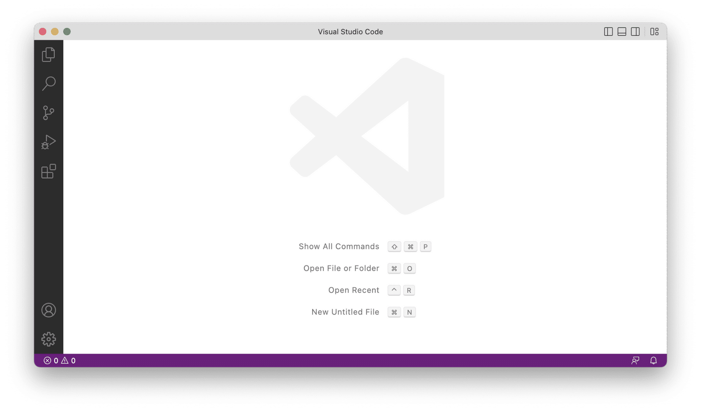
Below is an example of a developer who accidentally typed an equal sign when they should have typed a colon. VS Code caught the error, and when the developer hovered over the red squiggle, VS Code explained what the error was and offered to take them to further documentation.
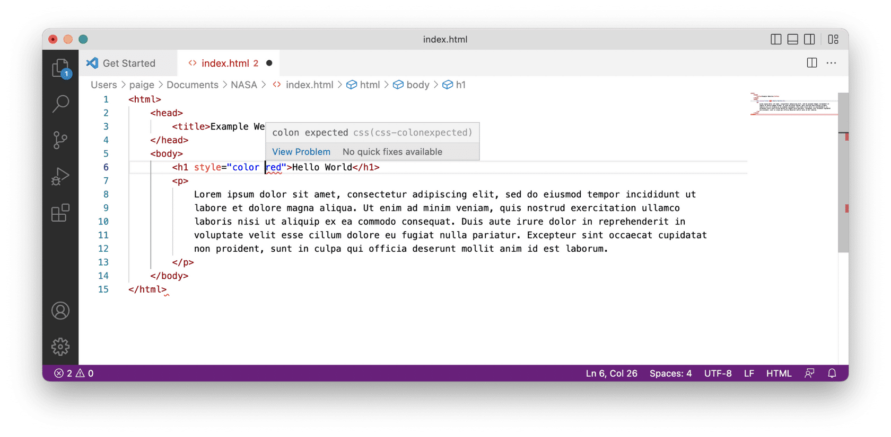
Another useful feature in VS Code (as well as many other code editors) is Git Integration. Instead of using a Terminal window, you can just make a few clicks and easily integrate Git into your workflow!
From VS Code you can:
IDE Example: Rstudio – IDE
While Visual Studio Code is a more generic IDE where you can use plugins to specialize it, there are also IDEs, such as RStudio, that have specialized features for specific languages right out of the gate.
Researchers conducting statistical analysis tend to use the coding languages of R and Python. RStudio has built-in tools for that very purpose, including data visualization.
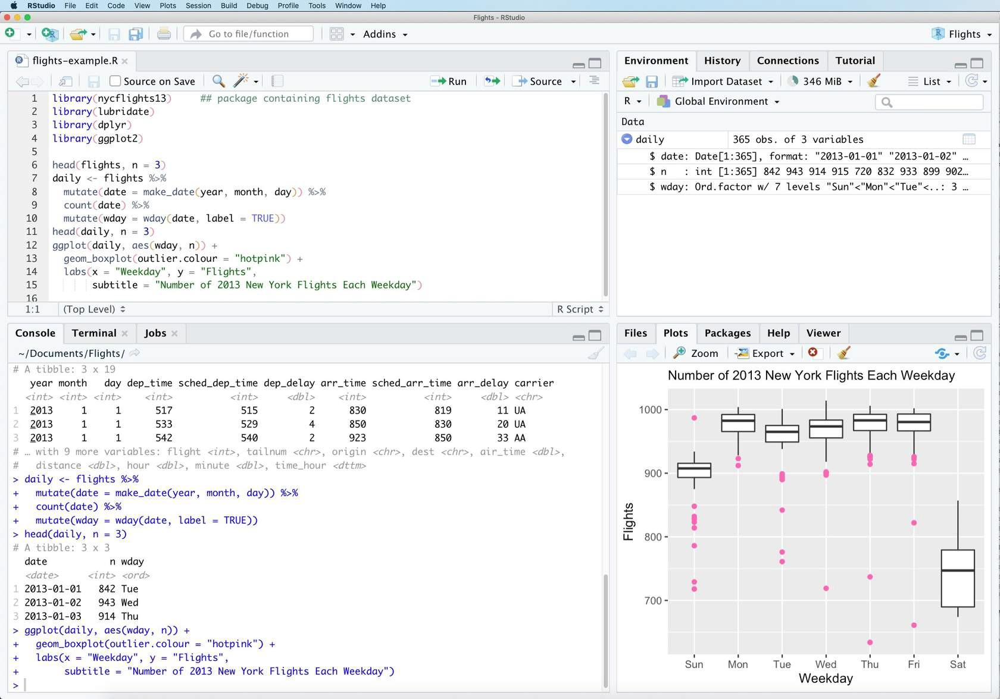
Source: https://en.wikipedia.org/wiki/File:RStudio_IDE_screenshot.png
Most laptop or desktop computers that run standard operating systems (Windows, MacOS, Linux) have multiple pre-installed plain-text editors that can be used for coding. It is beneficial to know how to use at least one, because it makes editing scripts and files a quick process.
| PROS | CONS |
|---|---|
|
|
A computational notebook refers to a virtual, interactive computing environment that combines code execution, documentation, and data visualization in a single interface. These notebooks are widely used in data science and coding fields. Popular examples include Jupyter Notebooks and R Notebooks. They allow users to write and run code in a step-by-step manner, providing an efficient platform for data analysis, research, and collaborative coding, with the added benefit of integrating rich text (including equations), images, and charts for clear documentation and communication.
Example: Jupyter Notebook and JupyterLab
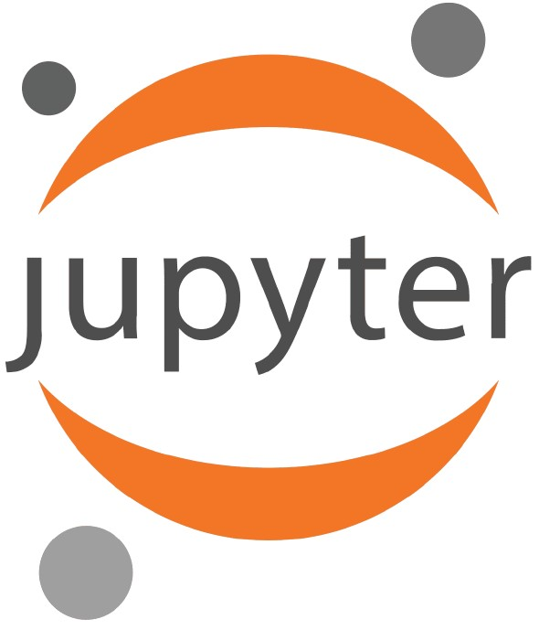
Jupyter notebooks are open-source web applications that are widely used for creating computational documents. But before we dive into Jupyter Notebooks, we want to make it clear that Jupyter Notebooks are one of many platforms in the Jupyter ecosystem:
We will use Jupyter Notebook as an example of a computational notebook and discuss how JupyterLab is related to Jupyter Notebook. The following section on computing platforms will discuss JupyterHub.
This screenshot shows an example of a Jupyter Notebook that integrates rich text (with headers and links), equations, code, and the interactive output from those lines of code, including a plot. This screenshot makes it clear why this is called a computational notebook - it resembles a lab notebook that you may have written out by hand in school.
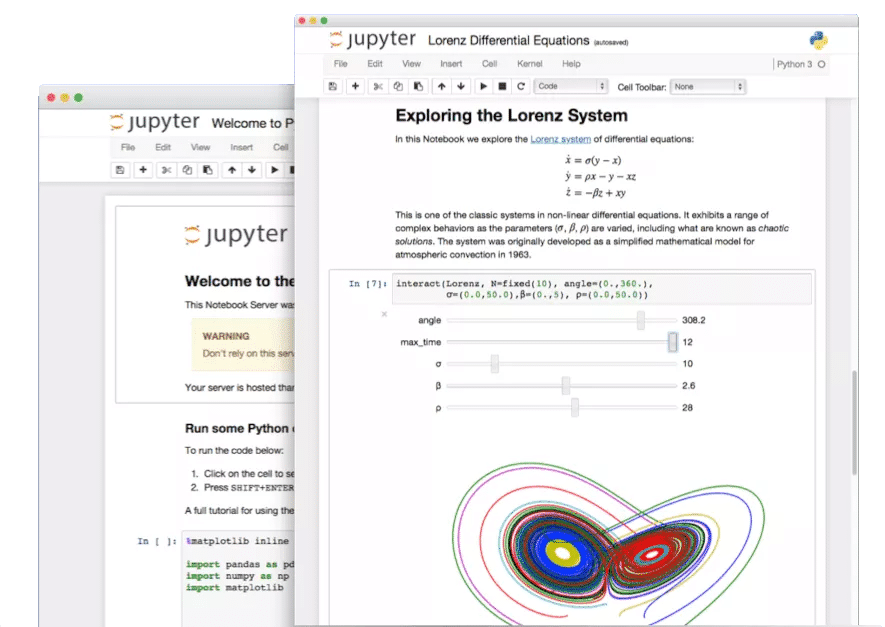
Many programming languages are supported by Jupyter. Fun fact: the name "Jupyter" refers to the three core languages supported by Jupyter: Julia, Python, and R.
JupyterLab is a browser-based interactive development environment that supports Jupyter Notebooks, and is designed in a more flexible environment that allows for many useful features. One of these features is Git integration, as we saw for other IDEs like Visual Studio Code.
Since Jupyter Notebooks allow for integration of code with visualizations and text, they can serve as a tool to carry out research projects and create easily shareable computational documents for education, collaboration, or science communication. With rich text capabilities, such as the use of headers, italics, links, and many more, you can create a readable document that contains runnable code. These are just some of the reasons why JupyterLab and Jupyter Notebooks are widely used across many disciplines, including computational research and data science.
If you want to dive in, check out Project Pythia's "Getting Started with Jupyter" lesson, geared toward scientists without assumption of programming background.
Let's use an example from Project Pythia to showcase how computational notebooks can be used in science. Project Pythia is an education Hub for the geoscientific community. They have some great learning resources and example research notebooks that are developed and maintained by the community, and are freely available.
In this activity, you will run pre-written Python code in a Jupyter Notebook from your browser to make plots related to the El-Niño Southern Oscillation (or ENSO). You will use the open-source software package called Xarray to read in sea surface temperature data from a global climate model (the Community Earth System Model - CESM), and create some visualizations of ENSO events across the last 20 or so years. The goal is to recreate the plot below for the last ~20 years. This figure shows the years and magnitude of the El Niño events in red and of the La Niña events in blue.
Source: https://climatedataguide.ucar.edu/climate-data/nino-sst-indices-nino-12-3-34-4-oni-and-tni
Follow These Steps:
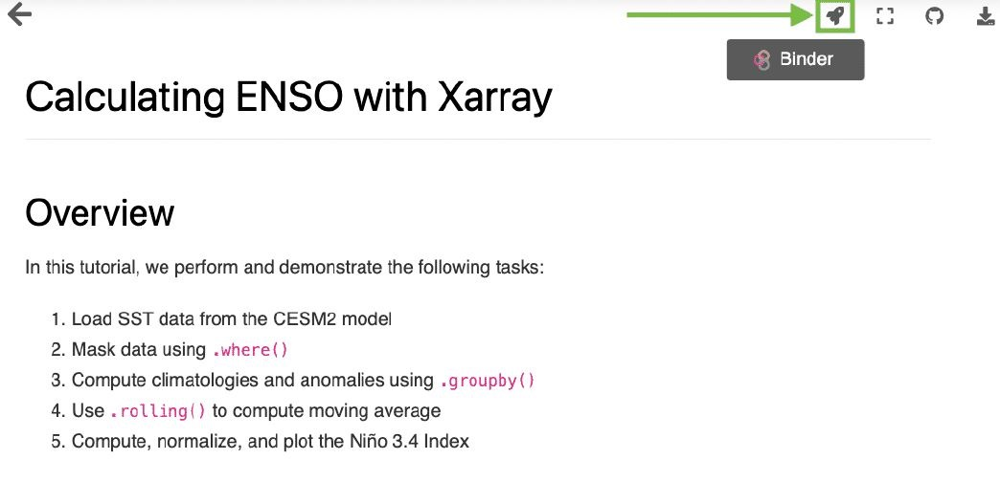
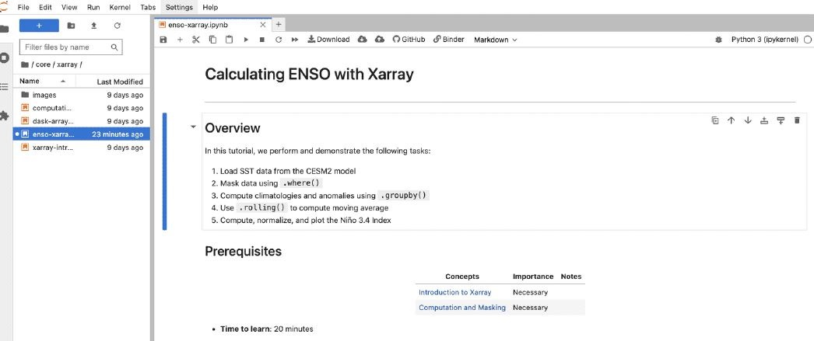
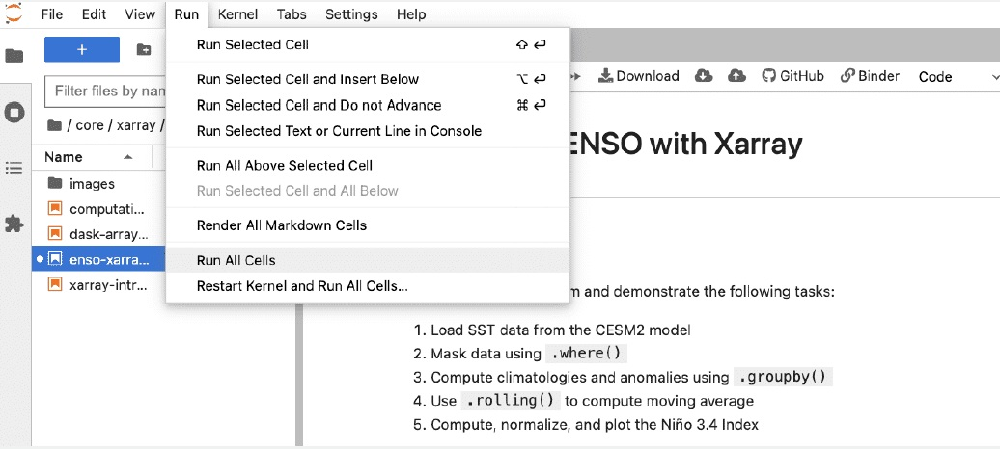
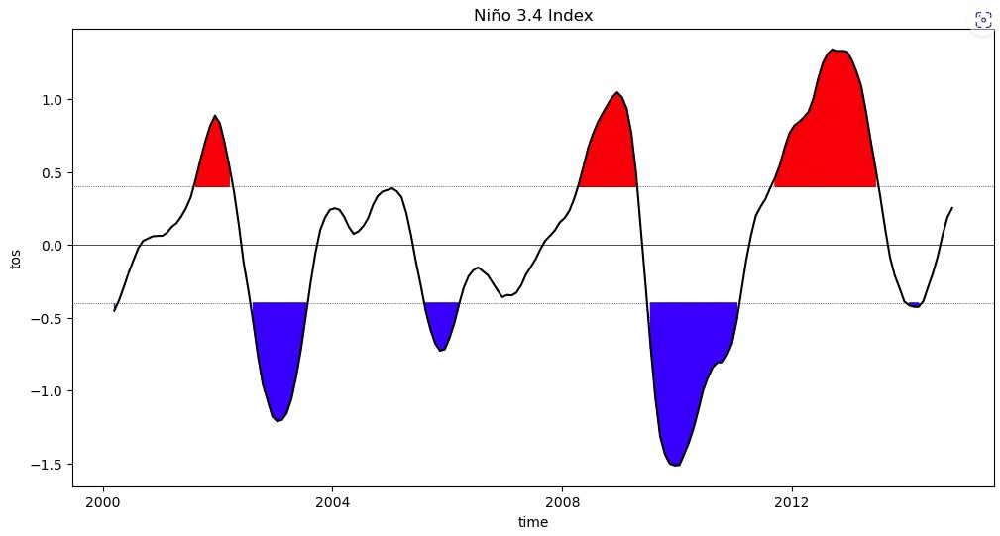
You can peruse more of the Project Pythia Python learning resources via their Foundations Book, and you can view more advanced example research workflows in the geosciences that use computational notebooks (which they call "Cookbooks") to see more examples of how notebooks are used in science. If you are interested in the geosciences, you can even contribute your own notebook if you have a notebook you'd like to share!
We use the term "computing platform" to refer to the computational machine used to run code. There are many different computing platforms that you can choose, each having their own pros and cons. Here is an overview of three computing options:
Pros:
Cons:
Pros:
Cons:
Pros:
Cons:
Examples of Cloud providers:
Many data providers, especially of large datasets, are migrating their data to the Cloud to increase accessibility and to make use of the large storage capacity that the Cloud provides. For instance, NASA Earthdata (which houses all NASA Earth science data) is now using AWS to store the majority of its data. Many Cloud providers also have a number of publicly available datasets, including Google Cloud and AWS.
When choosing a computing platform, it is important to consider where your datasets are saved and how big the datasets are. For instance, when working with small datasets, it is often preferable to use a personal computer since data download will take minimal time and large computing resources likely aren’t needed. When working with large datasets, however, it is best to minimize the amount of downloading and uploading data that is needed, as this can take significant amounts of time and internet bandwidth. If your large datasets are stored on the Cloud already, it is typically best to use Cloud resources for the computation as well, and likewise for HPC use.
Software repositories and archives provide centralized locations to store and share software, but there are some important key differences between them that we will discuss in this section.
A software repository is a dynamic and collaborative space where developers work on the latest code, making it the heart of ongoing software development and version control. It houses actively maintained codebases, which encourages collaboration and continuous, often community-driven, improvement.
Conversely, a software archive is static storage where stable and thoroughly tested software releases are kept. Users access these archives to obtain reliable versions of software, ensuring stability and reliability in their applications. Understanding the difference between these two is crucial for effective software development and distribution.
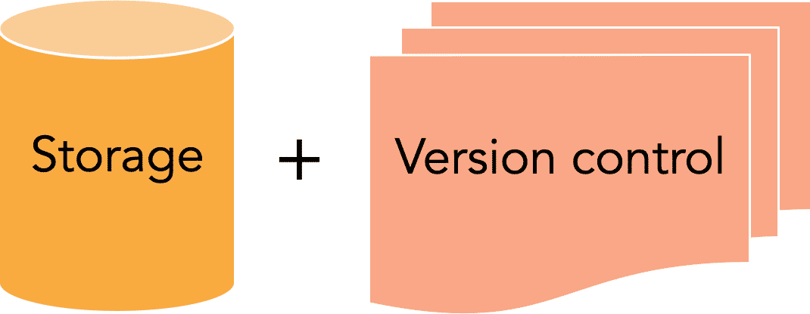
Git/GitHub and Bitbucket are popular choices for software repositories.
| Repository ☑ | Archive |
|---|---|
Important note: A repository is nothing more than a place for hosting code. These days, a version control system and a repository are often one and the same thing. It is important to understand the distinction. However, some websites are purely dropboxes for code executables or zip files of source code. |
|
| Repository | Archive ☑ |
|---|---|
|
|
Containers
A software container is a standalone, and executable package that includes everything needed to run a piece of software, including the code, runtime, system tools, environment settings, and libraries. Containers are isolated environments that hold the application as well as anything needed to run the application, ensuring consistency and portability across different computing environments. A container is a helpful tool that can provide efficiency, scalability, and ease of deployment. Some examples of widely utilized container tools are Kubernetes, Docker, and Apache Mesos.
Match each item to their description:
| Integrated development environment (IDE) | Enhanced text editor for code. Assists with identifying syntax and constructs of code |
| Software archive | Static storage where stable and thoroughly test software releases are kept. |
| Version control platform | Tool that helps software developers manage and track changes in |
In this lesson, you learned:
Answer the following questions to test what you have learned so far.
Question
01/03
Which is NOT a benefit to using version control and version control platforms?
Question
02/03
An interactive computing environment that combines code execution, documentation, and data visualization in a single interface is known as a:
Question
03/03
A software repository and a software archive are the same thing.